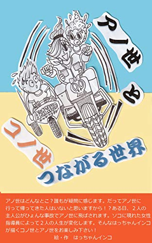

| あかのたにん: 自己中心 | |
| はっちゃんインコ | |
| (2019) | |
「あかのたにん」
第１章 太仁、初めて気になる他人
○
赤乃
そこへモサッとした髪で赤乃
仁志 ・ 太伊子 「太仁、髪がボサボサだよ」
夫婦の声が見事にシンクロして太仁に声をかける。
太仁 「知ってる」
仁志はコーンスープにコッペパンをつけて食べ、太伊子は白いご飯に味噌汁をブッかけて食べている。
太仁は冷蔵庫から密閉された容器に入っている柿の種と牛乳を取り出す。
仁志 「なぁ太仁、その柿の種と牛乳の朝食をズッと続けているけど、よく飽きないなぁ。お父さんみたいにさ、日替わりのスープに日替わりのパンを浸ける、"つけパン"するのって楽しいし美味いぞ！」
太伊子 「いえいえ、アナタなに言ってるの？朝はやっぱり白い御飯に味噌汁よ。コレが絶対に美味しいわ！」
太仁は柿の種をザッとマグカップに入れて、その上から牛乳をかける。
太仁 「別に何を、どうやって食べたっていいじゃん。自分がよけりゃさ」
太仁は冷めた言葉を両親に言い放ち、３分待ってから、ふやけた柿の種を牛乳と一緒に一気に口に流し込む。
仁志 「太仁は、その柿の種と牛乳のドコがいいんだい？」
太仁 「（面倒くさそうに）"柿の種"っていう商品なのに全然柿の種っぽくない・・・そういうとこかな？」
仁志 「ほぉ。そういう発想するって太仁は一体誰に似たんだろ？」
太伊子 「私じゃないわ」
仁志 「僕でもないよ」
お互い、なすり合いになる仁志と太伊子。
太仁 「（心の中で）どっちかに似てるか？なんてどーでもいい。親子でも性格が１８０度違う場合があるからさ。まさに"あかのたにん"・・・」
まだ平行線に話している仁志と太伊子、太仁はスッと台所を出て行く。
太伊子 「ねぇアナタ、私たち夫婦の名前を一文字づつ取って"太仁"て名付けたけど、それがアノ子を傷つけて、このまま一生"友達"が出来ないんじゃないかしら？どうしたものかしら？」
仁志 「確かにな・・・いっそう名前を変えてやるか？」
太伊子 「そんないきなり・・・ちゃんと本人と話し合いしてみましょうよ」
仁志 「そうだな。その前に知り会いに相談してみるよ。年頃の子供の気持ちがわかる人間だから何かいいヒントがあるかも知れない」
太伊子 「それがいいわね。アナタに任せるわ！」
仁志 「あぁ」
仁志と太伊子はニッコリうなずく。
○同・玄関・前（朝）
太仁はたすき掛けバックを、背中に回し玄関前に停めている自転車に乗って走り出す。
太仁
「（モノローグ）僕に名前は、言わずと知れた母親・太伊子の"太"と父親・仁志の"仁"の一文字づつとってつけられている。両親は妙に気に入ってるけど、"太仁"なんてどうにもこうにもオカシイし、どう考えても迷惑な名前だ！同級生も担任の先生も最初は必ず"
太仁は今さらながら自分の名前のことをボヤきながら、その先にある角を右に曲がり自転車をスイスイ走らせて行く。
○通学路・途中の橋のたもと（朝）
太仁は近道とばかりに土手を下り、川の水があまりないたもとを軽快に走って行く。
その途中に青いビニールテントの前に水色の採集箱をテーブル代わりにして、１人バーベキューをやって、豪快に肉を食べているホームレス・桃山しずか（６５）がいる。
太仁 「あのお婆さん、朝から１人バーベキューなんて食欲ありすぎだろ。まぁ他人のことはどーでもいいけど」
しずかをチラッと見て、サクッと前を通り過ぎて行く太仁。
しずか 「おや、あの子？なんか感じるねぇ」
フフッと笑うしずか、焼けた肉をガッツリ食べる。
○太仁の通う大学・中（朝）
１時間目の授業に向かう太仁、大きく深呼吸する。
太仁 「（モノローグ）いつもと同じ変わらない平凡な風景だな・・・」
とそこへ、生物学の教授・緑虫すぐる（３５）が前からやってくる。
緑虫
「ちょっとキミ、赤乃
"えっ？"と驚く太仁、緑虫をジッと見る。
緑虫 「なになに～どうした？キミの呼び方、間違ってる？」
太仁 「いえ、合ってますけど」
緑虫 「だよね～。なら返事ぐらいしてよ。なんでビックリしたの？」
太仁 「あーいえ、その・・・初対面の人って、ほぼほぼ僕のフルネームを"あかのたにん"て間違うし、まともに正しい名前で呼ばれたの初めてっぽいから驚いちゃって」
緑虫 「へぇそうなんだ。ところでワタクシのこと覚えているかなー？」
アフロヘア―で身長１７５ｃｍほどの細見、緑ブチのメガネ、緑のТシャツに黒のパンツ、靴は緑のスリッポン、白衣を羽織っている緑虫、太仁の前でクルっと回り、"カマキリのポーズ"を決める。
太仁 「・・・スミマセン。インパクト強いと思いますが覚えていません。急ぎますので」
緑虫の横をスッと通りすぎる太仁。
緑虫 「ア～チョイ、チョイ、太仁くんに見せたい物があるんだ。一緒に来てよ」
太仁 「僕に見せたいもの？」
緑虫は太仁の腕をグッといきなり掴んで連れて行こうとする。
太仁 「あの・・・１時間目の授業があるんですけど」
緑虫 「あぁそうだね。けど１時間目の授業って古文だよね？ソレってたいして好きじゃないでしょ？」
太仁 「まぁ・・・そうですけど」
緑虫 「じゃあいいじゃん。決まり！行こうよ」
初めて会う緑虫の不思議なパワーに飲み込まれ、怖いけど・・・ちょっと興味がある？そんな感じでついて行く太仁。
○同・生物学 緑虫研究室・中（朝）
朝なのに薄暗い部屋、少しヒンヤリしている。
緑虫 「ワタクシの部屋へ、ようこそ太仁くん！！」
緑虫は部屋に入るなり、妙なハイテンションになる。
太仁はそのハイテンションについて行けず、部屋の中をキョロキョロ見回す。
太仁 「緑虫教授、僕に見せたい物って何ですか？」
緑虫 「オォそうだ！太仁くん、コレコレ！」
緑虫は部屋の奥にある、自分のデスクのところへ走って行く。
緑虫が手招きする方へ恐る恐る近づいて行く太仁。
緑虫がパッと緑の布を取ると、中から１つの透明なプラスチック容器が出て来て太仁に見せる。
緑虫 「太仁くん！見てよコノ子、（※１）南米のスリナムで見つかった新種のカエルちゃんだよ！！」
透明なプラスチック容器を覗くと、体長４ｃｍほどで体はチョコレート色、手足の先は黒。
確かに太仁が見たことの無いカエルがいる。
太仁 「・・・」
ノーリアクションの太仁。
緑虫
「アレレ～ノーリアクションなの？コメントも無し？じゃあコノ子の名前教えてあげようか？聞いて驚ろけ！なんと！このチョコレートガエルちゃんの名前は"
太仁 「へェ～僕と同じ名前なんだ！タマタマ"タジン鍋"か何かから付けたかも知れないけど？確かにこの名前を付ける物好きな人は、緑虫教授しかいないと思いますよ。珍しい"チョコレートガエルのタジンちゃん"を見せてくれてありがとうございます。それじゃ」
早々に立ち去る太仁。
緑虫 「オイオイ・・・今の大学生って、こんな素晴らしいもの見てもな～んにも感動しないいんだぁ～。そういう時代？でも太仁クンて面白いもん感じるねぇ～」
緑虫は"チョコレートガエルのタジンちゃん"を手のひらに乗せて話かける。
○同・中庭（夕）
初夏の風が吹く中、自転車を引っ張って歩いている太仁。
太仁 「・・・僕と同じ名前が見つかったと思ったら、緑虫教授のチョコレートガエルとはね・・・つくづくイヤになる」
周りでは同級生たちがワイワイ、ガヤガヤ、夏休み明けに行われる"学祭"の準備で盛り上がっている。
太仁のクラスメイト・白谷かすみ（１９）が太仁を見つけて近づいて来る。
かすみ 「ねぇ太仁クンも参加しない？みんなでやると楽しいわよ！」
太仁 「・・・学祭の準備って自由参加だよね？僕はいいよ」
かすみ 「そう・・・でも毎日やってるから良かったら参加してね！」
太仁はかすみの方をチラッと見て、ペコッと頭を下げながら小走りで通り過ぎる。
かすみ 「太仁くん・・・ちょっと気になるのよね・・・実際どんな子なんだろ？」
かすみは、少しほくそ笑む。
太仁 「（小声で）・・・白谷かすみちゃん・・・同じクラスになった時から気になってたんだ。まさか向こうから声を掛けてくれるなんて！でも学祭か～ワイワイするの好きじゃないしな・・・まぁどうでもいいか」
太仁は、もう１度かすみを見返してから自転車に乗り大学の正門を出て行く。
校内の木々の陰で1人の男子大学生がジッと太仁を見ている。
○道路・ジュース自動販売機・前（夕）
太仁はキキーッと自転車を停め、小銭をだして迷わず"フルーツジュース"を選びボタンを押す。
ガチャン！と飛び出して来たフルーツジュースを急いで取りだしスグにフタを開けてガブガブガブ飲み始める。
太仁 「ウ―――ン美味い！昔から変わらない味だ。変わらないっていいことだよ」
太仁は一人言を言って、大きくうなずきフルーツジュースの余韻に浸る。
とその時、太仁の後ろから黒の半袖パーカー、迷彩柄のハーフパンツに迷彩柄のスニーカーの出で立ちの青空
広夢
「ねぇキミ、同じ学部の"赤乃
広夢は人なつっこい感じで太仁の顔を覗き込んで声を掛けて来る。
太仁 「ワァ！」
太仁は広夢の出現にビックリして、広夢から慌てて離れる！
広夢 「てか、フルネームで呼ばれたこと、カナリ驚いてビビッてる感じぃ～？」
太仁 「いや、その・・・今日、フルネームで呼ばれるの２度目だからチョット驚いただけだよ。それよりキミは何者？」
広夢 「"何者―"って、それヒドクない？俺、キミと同じ学部に編入してカレコレ３ヵ月経つんだぜ？オマエってさ、周りのこと全～然見てなくね？"他人のことはどーでもいい"系だろ？」
初めて会う広夢の言葉が図星の太仁、返す言葉が出て来ない。
広夢はへヘヘッと笑って、
広夢 「では改めまして！俺は"青空広夢"と申します！大学のあと夕方からはモデルのバイトしてまーす！以後お見知りおきを！！」
広夢はモデルターンをクルッとして、ペコッと太仁に挨拶をする。
太仁 「あ、そう。それじゃ」
フルーツジュースを一気に飲み干すと、自転車のハンドルを持ち早々と立ち去ろうとする。
広夢 「ちょっと待てよ！」
広夢は太仁の自転車のサドルを押さえて立ち去るのを阻止する。
太仁 「（心の中で）モデルとか・・・僕の１番苦手なタイプ。面倒くさい。早く逃げなきゃ！」
広夢 「あのさ、お近づきのしるしに、コノ辺りの案内してよ。少しだけ、いいじゃん！」
そう言うが早いか、広夢は太仁の自転車のサドルにヒョイッと乗り込んで勝手に走って行ってしまう。
太仁 「あ、おい！」
太仁は慌てて広夢の後を追っかけて行く。
○通学路・途中の橋のたもと（夜）
太仁は広夢を大学周辺を案内して（振り回され）ようやく解放されて、ヨロヨロ自転車を走らせながらグッタリ頭をうなだれている。
太仁 「（小声で）あの広夢クンと言い、緑虫教授も・・・一体なんなんだ？今日は１日がカナリ濃かったな。もうこんな疲れる日なんて来ないで欲しい。（モノローグ）そう言えば・・・以前、僕は"もし自分の名前をフルネームで間違えない様に呼ぶ人が現れたら？男の人なら自分の友だちにしよう！"なぁんて思ってたことがあるけど、広夢クンと緑虫教授は無いな」
辺りはダンダン暗くなってきている。
太仁 「（小声で）あー暗くなってきた！早く帰ろう」
太仁は自転車の立ちこぎをして帰路を急ぐ。
とその時、暗くなった河原から悲鳴が聞こえて来る！
しずか 「だ、誰かー！助けとくれ～！お願いだー！」
太仁 「エッ！？何だよ、どっから聞こえてくるんだ？もう他人に関わりたくないんだけど」
しかし、ただならぬ悲鳴に、冷汗が出て体が震えて来る太仁、自転車を停め悲鳴のする方へ走って行く！
助けを求めているしずかの声が橋のたもとに響き渡っている！
太仁 「どこにいるんだ？暗くなってきたから良くわかんないよ。もぉー！」
太仁は焦りながら、ウロウロ捜し回る。
太仁 「オ――――イ！ドコですか？どこにいますか？」
しずか 「誰かー！ココだよー！」
ズッと助けを求めるしずか、声がさっきより小さくなる。
太仁 「アッチの方から聞こえる！？」
太仁は無我夢中で自分の耳を頼りに、小さくなる悲鳴の方へ向かって行く。
太仁 「オ――――イ！オ――――イ！」
太仁は今度は何度も何度も叫んでみるが、助けを呼ぶ声がピタッとなくなり、辺りがシーンと静まり返る。
太仁 「あ、あれ？声が聞こえない・・・まさか、もう死んじゃった？」
太仁の心臓が急にバクバクしてきて、体がパァーッと熱くなる。
太仁 「（心の中で）い、今なら、誰にも見られて無いし"もしも"のことがあっても僕のせいにはならないよな・・・てか、僕は全然、関係ない！やっぱ帰ろう！」
そう考え、帰ろうとして振り返ると、川の岩場の下に何かが動くのが見える。
太仁 「（小声で）ヤバイ・・・誰か来てくれないかな？こんなことなら、アノ広夢くんと別れなきゃ良かったかも・・・」
少し後悔しながら、恐る恐る川の岩場に近づいて行く・・・
○同・川の岩場（夜）
ソコには桃山しずかが素っ裸で倒れていて、岩と岩の間に下半身が挟まれて川の水につかり、上半身はゴツゴツした小さな岩の上にうつ伏せになっている。
太仁 「エッ！？この人・・・確か朝、1人バーベキューやってたお婆ちゃんだ！それに・・・全裸って？・・・なんで裸なんだ？まだ本格的な夏じゃないし、今日はマダ涼しい感じなのに・・・まさか泳いでた、わけないよな？もしかして自殺だったり？」
太仁は目の前の状況に頭がパニクって、体が震える。
太仁 「・・・どうしよう・・・マズは落ち着こう」
太仁は1度、フゥーッと大きく深呼吸をしてみる。
太仁 「と、取りあえず声を掛けてみよう。もし反応がなかったら警察を呼ぼう。生きてたら、救急車を呼ぼう。呼んだら速攻逃げよう！」
太仁はそう決心して、しずかに近寄り、
太仁 「もしもし・・・」
太仁がソッと声を掛けてみると・・・
しずかはカァー、カァーいびきをかいて寝ている。
太仁 「なーんだ、寝てるんだ！よ、良かったー！（胸をホッとなでおろす）・・・でも、助けを求めてた割には寝てるってどうよ？」
太仁は安心したこともあり、しずかから少し離れて声を掛ける。
太仁 「（少し大きな声で）大丈夫ですかー？」
すると、しずかのいびきがピタッと止まり、ムクッと起き上がり、急に辺りをキョロキョロ見回す。
しずか 「誰かいるのかい？」
太仁は、しずかの全裸を直視できず、思い切り目をそらす。
太仁 「はい・・・タダの通りすがりの者ですが・・・」
しずか 「そうかい。そりゃちょうど良かったよ。ワシをココから出しとくれよ」
太仁 「一体、何かあったんですか？」
しずか 「あぁそれな・・・ワシは夜になったらココいらを風呂にしててよ、そしたら今日に限って足をすべらせちまって流されてよ、岩と岩の間に右足を挟んじまって、どーにもこーにもになっちまったんだよ！さぁワシを引っ張り出しとくれ！」
太仁 「あの・・・全裸なんで・・・近づけないから無理です！」
しずか 「ワッハハハ！！アンタ純情なんだねー！裸なんか、見ても減るもんじゃねぇ。ドンドン見とくれよ」
しずかはオチャメに、ふざけながら太仁に声を掛ける。
太仁は全く笑えず、顔を赤らめてタダタダ俯いている。
しずか 「そこらへんにワシの脱いだ服とバスタオルがあるからコッチに投げてくりょ！」
しずかに言われるがままに太仁は、しずかの脱いだ服とバスタオルを拾い、後ろ向きでしずかに投げる。
しずかは急いで上着を着て、バスタオルを腰の辺りから巻く。
しずか 「オーイ！服を着たし、バスタオルも巻いたからよ、早いとこココから出しとくれ！」
大声で叫ぶしずか、太仁は、意を決してしずかの元に行き、右足が挟まっている岩をどかし、しずかを川の中から助けだす。
○同・しずかの
七輪で暖を取るしずか。
しずか 「あぁようやく体があったまってきたよ。ありがとな！」
太仁 「それじゃ、僕は帰ります」
しずか 「さっきは、ふざけてすまなかったな。なんか久しぶりに純粋で、すれてない子を見たもんだから、つい嬉しくなっちゃてさ」
太仁 「いえ、どうってことないですから」
しずか 「あぁそうだ、自己紹介がマダだったな！ワシの名前は"桃山しずか"ってんだ。ワシにとってアンタは命の恩人だ！御礼と言っちゃなんだけどな、ワシが"良く当たる占い"をやってやるよ」
太仁 「御礼なんていいですよ。占いとか、興味ないんで」
サッと立ち上がる太仁、しずかの家を出ようとすると、
しずか 「アンタ、毎朝ココを自転車で、近道とばかりに通る大学生だろ？」
太仁 「はい・・・」
しずか
「それから名前は"赤乃
太仁は自分の名前を正しいフルネームで言われて、思わず振り返る。
太仁 「な、なんで知ってるんですか？」
しずか 「勘だよ、勘。ワシはこの辺りのこたぁ何でもわかるし、知ってんだよ。どうだい占いを信じる気になったかい？」
言葉が出て来ない太仁・・・
しずか 「（フッと鼻で笑って）まぁいいさ。信じるか信じないかはアンタに任せるよ。けど聞いときな。アンタは名前で損してる、って思ってるだろ？」
太仁 「そりゃそうだろ」
しずか 「けどね、その名前が近いうちにちゃんと認められる様になるよ！」
太仁 「ちゃんと認められる？」
しずか 「あぁ。チョットした事件が起きるのさ！」
太仁
「事件？そういう面倒くさいのマジ
しずか 「まぁそう言うなって！イイ事件なんだから、せいぜい頑張んなよ！」
太仁 「イイ事件？？」
ニッコリ笑うしずか、太仁はしずかの住処を出ながら"ハァ"と小さく溜息をつく。
第２章 太仁、他人の事件に首をつっこむ
○通学路（ 翌日 ・朝）
大学へ向かう太仁、ボンヤリ眠そうに自転車を走らせている。
太仁「（心の中で）昨日会った緑虫教授・・・青空広夢クン・・・桃山しずかお婆ちゃん・・・みんなインパクトが強すぎて、目に焼き付いちゃって全～然、眠れなかった・・・」
太仁はいつもの角を右に曲がり自転車をスイスイ走らせて行く。
○同・途中の橋のたもと（朝）
太仁は昨晩のしずかのことがあって、一瞬、近道を通るか、やめるか、考える。
太仁 「・・・一応、安否確認しておいた方がいいよな？」
太仁はしずかの住処に向かって行こうとして、ふと対岸を見ると川沿いにあるジュースの自動販売機の前で背の高い男性とかすみが何やら話をしているのを見掛ける。
太仁 「あれ、かすみさん？」
太仁は気にしつつも、しずかの元に向かう。
○桃山しずかの
太仁はしずかの住処の横に自転車を停める。
太仁 「しずかお婆ちゃん！起きてますかー？」
太仁が数回、しずかの
太仁 「エッ！？まさかヤバイッてこと？」
太仁の心臓がバクバクして来る。
○同・しずかの
勢いよく部屋に入っていく太仁、しずかの姿がない。
太仁 「あ、あれ？しずかお婆ちゃん？」
太仁は安心しながらも、キョロキョロ
○同・しずかの
スグに飛び出して来る太仁、河原の方へも取りあえず探しに行くが、しずかの姿はどこにもない・・・
太仁 「まぁ姿が無い、ってことは"元気な証拠"だな。ま、いっか」
気にもせず、太仁は大学に向かう。
○大学構内（夕）
帰り支度をしている太仁、そこへ広夢が慌ててやって来る。
広夢 「太仁クン、昨日はサンキュでーす！で、大変なことがあんだけど！」
太仁は思わず、聞こえないフリをする。
広夢 「―ってシカトかよ！太仁クンてさ友達いないだろ？」
太仁 「広夢クンに、そんなこと関係ないだろ」
広夢 「関係あるさ。だって昨日お近づきになったじゃん。現実～俺が友達第1号！」
そう言いながら広夢は太仁の肩をポンポン叩く。
広夢 「－って、そんなことより事件が起きた！」
太仁 「（小声で）・・・事件？そう言えば、昨晩のしずかお婆ちゃんの占いで"イイ事件"て言ってたけど・・・まさか、コノ事件のことなのか！？」
広夢 「（太仁の耳元で）白谷かすみちゃんが誘拐されたんだよ」
太仁 「ハァー！そんなわけない」
広夢は"シーッ"と言いながら、慌てて太仁の口をふさぐ。
広夢 「（ささやく感じで）この誘拐事件はマダ世間には公表されてない。今日の午後３時頃、学長んとこに身代金５，０００万円の要求電話がかかってきてさ！」
太仁 「（小声で）なんで、生徒の1人のキミがそんなこと知ってるんだよ？」
太仁は疑問に思って広夢に聞き返す。
広夢 「（小声で）それな。普通に学長の電話、盗聴したんだけど」
太仁 「盗聴って！？」
広夢 「シーッ！だから声がデカイって！」
太仁 「（小声で）あぁ悪い・・・でも何だって盗聴なんかしてんだよ？」
広夢 「知りたい？なら教えてやるから一緒に来てよ」
太仁 「はっ！？なになに～ヤバイことに巻き込むなよ・・・」
そう言うと、広夢は太仁の腕を掴み、無理矢理連れて行く。
○同・生物学 緑虫研究室・中（夕）
広夢が、気が乗らない太仁を連れて入って来る。
太仁 「なんで、この部屋？」
緑虫 「やぁ太仁クン、やっぱ来ましたね～」
緑虫はチョコレートガエルのタジンちゃんをナデナデしながら太仁を迎える。
広夢 「緑虫センセは、かすみちゃんの誘拐のこと、知ってんだ！」
太仁 「・・・あのさ、広夢クンと緑虫教授がなんで繋がってるか、よくわかんないけど？・・・それはさておき、今は"かすみちゃんが誘拐された"って大事件が起きてるんだよ！ココで僕たち３人が集まってもどーにもこーにもだし、早く警察に知らせるべきだろ！悪いけど僕はかすみちゃんとは関係ないーって言うか、どうすることも出来ないから・・・」
広夢 「アレレ？？関係ないーんなわけないんじゃないの？」
広夢は太仁の顔をクルッと覗き込む。
太仁 「なんで、どうゆうこと？」
広夢 「だって～太仁クン、昨日さ、大学を出る時にかすみちゃんに声かけられてメチャ嬉しそうな顔してたじゃん！」
太仁 「あれは、"学祭準備に参加しない？"って誘われただけだよ」
広夢 「いやいや～その後、帰る時に振り返ってまたかすみちゃんをジッと見てたよ！アレって好きなんじゃん！でしょ、でしょ？」
太仁 「そんなことないって、なに言ってるんだよ・・・」
緑虫 「昨日と言わず、太仁くんは度々かすみちゃんをジッと見てる時がありますよね～」
広夢 「ホレホレ～緑虫センセにも見られてるんじゃん！」
太仁は俯いて、顔をポッと少し赤らめる。
太仁 「・・・だけど今朝、通学途中の川の対岸でかすみちゃんが背の高い男の人と一緒にいるところを見たよ。普通に笑顔で会話してたし、彼氏がいるんじゃないのかな？」
緑虫 ・ 広夢 「なんと！？ソレって彼氏じゃなくて、誘拐犯人を見たってことじゃない？」
太仁 「えっ、誘拐犯人・・・？」
緑虫 「－で、どんな感じの男だったんですかぁ？」
太仁 「どんなって・・・そうだな、身長１８７ｃｍぐらい、体重７０㎏ぐらい、年齢３２歳ぐらい、黒のアンダーシャツ、紫のジャケット、グレーの綿パン、白のスニーカー、それから人相はー」
太仁のあまりの記憶の良さに、緑虫と広夢は顔を見合わせて"マジか？"と驚く。
太仁は近くにあったチラシの裏にシャッシャッと素早く人相を描く。
太仁 「こんな感じの顔かな？」
そこには、面長で、両耳の耳たぶが大きくて、筋の通った鼻、奥二重の目、肩に少しかかる黒髪、左の頬に直径８ｍｍぐらいのホクロありーの人相が見事に描かれている！
広夢は、そのチラシをサッと取って、マジマジ見る。
広夢 「太仁クン・・・なんだかスゲェな！」
緑虫 「川の対岸にいた人物を、ココまで正確に覚えてるなんてありえないでしょ？」
太仁「僕、視力と記憶はカナリいいんだ！子供のころから１度見たものは全部記憶するクセがあって。ソレだけが取り柄なんだけど・・・」
緑虫
・
広夢
「いやいや～立派な"
緑虫 「そこらへんのお巡りさんや、探偵より天才ですよぉ～やぁ驚きましたー！」
広夢 「かすみちゃんはさ、俺と同じモデル仲間でお嬢様なんだぜ！」
緑虫 「そして、かすみちゃんはワタクシの生物学を専攻してくれていて、毎日楽しんで聞いてくれる。何より私のチョコレートガエルのタジンちゃんとも良く遊んでくれる、大切な生徒さんなんですよぉ」
緑虫 ・ 広夢 「だからどうしても我々だけで早期解決して助けてやりたい！！ゼヒとも協力して欲しい！お願いします！！」
緑虫・広夢の真剣な
次の瞬間、昨晩の寝不足の睡魔が襲ってくるが必死にこらえる。
広夢 「－で、どうする？どうやってかすみちゃんを捜す？」
太仁 「まず・・・ちょっと話を聞かせてよ。かすみちゃんがナゼ誘拐されなきゃならないのか訳がわからない。でも緑虫教授と広夢クンが知ってるってことは、以前から"誘拐される可能性があった"ってこと？」
緑虫と広夢は目を合わせる。
緑虫 「サスガに勘がいいですねぇ～。まぁだから太仁クンをズッとマークしてたんだけど（笑）わかりました。話しましょ！」
太仁 「"マークしてた"って？どういう意味ですか？」
緑虫 「まぁまぁ～ソレは、コノ誘拐事件が無事に解決したら？教えてあげますよ～。あの"白谷かすみちゃん"は白谷財閥のお嬢様"で、幼い頃から子供モデルとして活躍、熱狂的なファンが多くいましてね」
広夢 「そうそう、その熱狂的ファンの中には"困ったちゃん"が何人かいるわけよ！その中の１人・自称ユーチューバーが、３ヶ月前に"白谷かすみちゃんに会いに行きまぁす！"的なフザけた映像と書き込みをやり出したんだ。だから俺は同じモデル仲間のかすみちゃんを守るべく居ても立っても居られず、この大学に編入してきたってわけさ！」
緑虫 「ワタクシは、趣味でユーチューバーを観ていたら、かすみちゃんの異常な、熱狂的ファンの映像に気づき、私の学科を毎日真剣に受けてくれているかすみちゃんを近くから見守っていたーってわけです。そしたら同じ思いの広夢クンと出会いましてね」
広夢 「それで２人で手を組んだ！ってわけさ」
太仁 「・・・そうだったんですね。事情はわかりました。でも僕は警察じゃないから、僕が出来ることしかやれない・・・それでもいいの？」
緑虫 ・ 広夢 「（真剣に）それでいい！」
太仁は緑虫教授と広夢の、かすみちゃんへの真剣な思いと気持ちを受けて、
太仁 「わかったよ！じゃあ、早くかすみちゃんを捜そう！」
そう言うと太仁は、自分のノートパソコンをおもむろに開き、素早く電源を入れ、いきなりカチカチ打ち始める。
広夢 「おい太仁、何をやってる？」
太仁 「ＧＰＳ！かすみちゃんのＧＰＳを調べてる！」
緑虫 「おやおや～こりゃ、広夢クンよりカナリのハッカーだったりして～！？」
太仁は無言で意味不明のアルファベット・数字をカチカチ、バンバン、家続けていく。
広夢 「まぁ俺も人のこと言えねぇけど、太仁はいつからハッカーやってんだ？俺は中学ん時からだけど」
太仁「悪いけど、僕はハッカーじゃないよ。ＧＰＳが好きなだけ」
緑虫 「そりゃ珍しいマニアですね～」
広夢 「－で、気に入ってるかすみちゃんのＧＰＳだけチェック済みってわけかよ？」
太仁 「かすみちゃんだけじゃないよ。この大学の同級生たちや、この大学の教授たち、僕の家の半径３km以内の近隣の人たち・・・ぐらいですけど」
広夢 「じゃあ俺や緑虫センセんのも知ってるってことかよ。ソレって、普通に"犯罪"っぽくね？」
太仁 「勝手に犯罪にしないで下さいよ。メチャ暇な時にパソコンいじってたら、タマタマ携帯電話のＧＰＳを管理してるトコに入り込めちゃったんだ」
広夢 「タマタマね～？」
太仁 「・・・だからって悪用してるわけじゃないし。それより広夢くん」
広夢 「なんだよ？」
太仁 「かすみちゃんて、広夢くんのモデル仲間なんだよね？そっちの情報は何かないの？」
太仁はさらにパソコンをカチカチ打ち方を早める。
広夢「 てか、そもそも男と女は撮影する日時も別々だし、仲間同士が会うのは月に２，３度、ランチしたり、カラオケやったり～そんな感じだからな」
太仁 「そうなんだ・・・でもその仲間の中でも親しくしてるモデルとかはいないの？思い出してみてよ」
広夢 「ウ～ン・・・みんなでワイワイしてるだけだからな。個人的にはいないかも？」
太仁 「手掛かりなしか。緑虫教授は生徒の中に、かすみちゃんと親しくしてる人とかいないんですか？」
緑虫 「まぁ心当たりがないわけじゃないですが～でもあの人はねぇ～？」
太仁 ・ 広夢 「ソレって誰ですか？」
広夢はテンションが上がり、太仁の手が一瞬止まる。
緑虫
「半年ぐらい前まで、ワタクシのところで助手として働いてた・
広夢 「確かに・・・俺らとつるむより、おっさんカメラマンやマネージャーと盛り上がってる方が多かったかも？あー、そう言えば以前、かすみちゃんがモデル仲間たちに"私が通ってる大学の教授の助手と水族館に亀を見に行ったんだ～"的な話しを嬉しそうにしてたことがあったな～その人って、まさか？」
緑虫
「
広夢
「
太仁 「話の流れからしても亀吉太郎さんは怪しくなさそうですが、一応、何か知ってることがないか聞いてみて下さい」
緑虫 「了解で～す」
緑虫はチャッ、チャッ、と電話をかけながら席をはずす。
緑虫が部屋を出て行き、太仁と広夢の２人きりになる。
しばし沈黙が流れる・・・
広夢 「なんかしゃべれよ、太仁」
太仁 「今、真剣なんで。ねぇ広夢クンてさ、モデルだし、女の子にモテる感じだし、カナリの存在感あるのに、僕は全然気づいてなかった。ホントに僕の近くにいたの？・・・あー、でもやっぱ僕が周りを見てなかっただけだよな・・・」
広夢 「そこな・・・俺ってコレでも一応、高校生・大学生のファッション誌に出てる有名人でさ（自画自賛）太仁がい言う様に女の子にモテるし～カナリの存在感あるし～（笑）だからこそ、大学構内にいる時は、かすみちゃんのＳＰ的な役割してたから地味～にして。オーラを消してたんだよ。太仁のことは妙なオーラがあったから興味持ってたけどワザと近づいてなかったんだ」
太仁 「じゃあ気づかなくて当たり前か」
広夢 「正解～！」
と次の瞬間、パソコンの画面にコノ地域全体に広がる同級生のGPSが映し出される。
太仁 「出た！」
広夢 「かすみちゃんのＧＰＳはドレだよ？」
太仁はかすみのフルネーム"白谷かすみ"を入力して、ポン！とエンターキーを押すと、赤の点滅され、ついにかすみに居場所が判明する。
太仁 「ココだ！ココにかすみちゃんがいる！」
広夢 「ココって、"市民の憩いの広場内、多目的スペース"の１つじゃん」
太仁 「なんでココなんだろう？」
するとソコに、慌てて緑虫が戻って来る。
緑虫 「かすみちゃんの居場所がわかったんですね！亀吉太郎さんも向かってますから」
太仁 「なんで亀吉さんが？」
緑虫 「かすみちゃんにメールで呼び出されてるそうです！」
広夢 「なんだよソレ！？亀吉ってまさか、かすみちゃんと付き合ってんじゃないよな？」
緑虫 「安心して下さい。付き合ってませんて。そんなことより急いで行って下さい！御二人で！」
太仁 「えっ・・・僕たち２人で？緑虫教授は行かないんですか？」
緑虫 「ワタクシは、自分なりにやらなきゃならないことがあるので！」
太仁 「やらなきゃならないことって？」
疑問に思う太仁だが、その疑問を打ち消す様に太仁の前に広夢がサッと立ち、
広夢 「（大声で）とにかく！！一刻を争う状態なんだ！緑虫センセはどーでも太仁、行くぞ！！」
広夢は太仁の背中を押してドンドン連れて行こうとする。
太仁 「あっ大事なものを忘れてるよ、広夢くん！！」
広夢 「大事なもの？」
太仁 「身代金だよ！身代金！だってもし、かすみちゃんを見つけたら、ソコに誘拐犯人がいるわけなんだから、当然！身代金と人質のかすみちゃんと交換になる！そうでしょ、緑虫教授！」
広夢 「もう身代金の用意はできたんすか？」
緑虫 「いや・・・学長の話だと犯人の要求は"今晩夜中０時までに身代金を用意しなければ人質の命はない"ってことで、今まさに水面下で"教育委員会"に交渉してかき集めてるとこだからもう少し時間がかかるね。だからワタクシたちは身代金を渡す前にかすみちゃんを救出したい！！と思うわけですよぉ～」
太仁 「でも身代金が無くて、誘拐犯人と鉢合わせして、何らかの凶器を持ってたら僕たちの命も危ないんじゃ？」
緑虫 「そうですねー。じゃあ、その時はコレを使って下さい」
緑虫は巾着袋に入った催涙弾を渡す。
広夢 「催涙弾？なんでこんなもん緑虫教授が持ってんだ？」
緑虫 「大した催涙弾じゃないですよ。なんせ自己流なので～」
太仁は巾着袋に入った催涙弾を受け取り、慌てて自分のノートパソコンと巾着袋を、たすき掛けバックに突っ込み、広夢に引っ張られる様に部屋を出て行く。
緑虫 「フフフ～ン（笑）さぁワタクシは、作業に取り掛かりましょ！」
緑虫は不敵な笑いを浮かべて、チョコレートガエルのタジンの頭をなでる。
第３章 太仁、初恋の香りがする他人
○市民の憩いの広場内、多目的スペースの１室・前（夕）
太仁と広夢はハァハァ息を切らして立ち止まる。
ドアには"資料室"の札が掛けられている。
太仁 「こ、この部屋だよ・・・」
広夢 「一気に踏み込もうぜ！」
太仁 「ちょっと待って。広夢くん、冷静になろう」
広夢 「そだね～」
と言いつつ、広夢はサクッと太仁を無視してノックもせずにいきなりドアをドカッと開けて突入して行く！！
広夢に圧倒される太仁、ビックリしながらも後について行く。
○同・中（夕）
中に入ると、資料の入った段ボール箱が棚に陳列されている。
ユックリと中に進んでで行く太仁と広夢－と、棚の横からゴトッと亀吉太郎が現れる！！
太仁 「ワァッ！！」
ビックリする太仁は思わず、頭を隠してしゃがみ込んでしまう！
亀吉は、見た目は地味・髪は五分刈り・黒ブチの丸メガネ・疲れたサラリーマン風のグレーのスーツの出で立ち。（体型はポッチャリ・身長１６０ｃｍぐらい）
広夢 「ア、アンタ・・・もしかして亀吉のオッサン？」
亀吉 「あ、はい。そうですぅ！」
広夢 「てか地味～(失笑)。なぁ、かすみちゃんにメールで呼び出されてんだろ？かすみちゃんはドコにいんだよ？」
亀吉 「確かにかすみちゃんからメールが来て（広夢にメールを見せる）ココで久しぶりに会いましょうって。でもいないんですぅ（冷汗）」
亀吉はガラケーを握ってオロオロする。
広夢 「亀吉のオッサン、今どうゆう状況か知ってるよな？」
亀吉 「あ、はい・・・先ほど緑虫教授に聞きましたぁ！まさか誘拐されてるなんてぇ～！！」
亀吉はショックのあまり、足がブルブル震えている。
広夢は太仁の右手を握って、立ち上がらせる。
太仁
「（ビクビクしながら）・・・ねぇ亀吉さん、かすみちゃんが誘拐されなきゃならない
亀吉 「水族館もそうですが、ここにも時々イベントがあると遊びに来てたんですよぉ。でもイベントどころか、いつの間に資料室になってて、何がなんだかぁ・・・あっそうだ！ココにかすみちゃんの白いスマホが落ちていたんですよぉ・・・？」
広夢 「ソレを早く言えよ！」
広夢はかすみの白いスマホをひったくる！
太仁はノートパソコンを広げて、改めてかすみのＧＰＳを確認してみると、
広夢 「ココにかすみちゃんのスマホがあるってことは、もうソレ見ても手掛かり無くなっちゃったじゃん。あ～あ」
広夢はフゥーッっと大きな溜息をつく。
太仁 「広夢クン、そのかすみちゃんのスマホを見せて！」
広夢 「あぁ。でもどうした、何かオカシイのか？」
広夢は太仁にかすみの白いスマホを渡す。
太仁はスマホをいじり始める。
そして、たすき掛けバックからコードを取り出して素早くスマホをノートパソコンにつなげて、正確なＧＰＳの位置を導きだす。
広夢 「・・・太仁、ソレで何がわかるんだ？」
太仁 「やっぱり・・・コレかすみちゃんのGPSじゃないよ」
亀吉 「エ、エ―――ッ！？じゃあコノ白いスマホは誰んのぉ？この待ち受け画面と言い、僕とやり取りしたLINEからして絶対にかすみちゃんのだよぉ」
広夢 「（大声で）ったく！どうなってんだよ？」？
太仁 「スマホはかすみちゃんのに間違いないけど、ＧＰＳは他のものと取り替えられてるんだよ。だって見て！さっきまではココにＧＰＳが絶対あったハズなのに、違うところに少しづつ移動しているのがわかるよ！」
広夢 「じゃあ、俺ら3人、かすみちゃんを誘拐した犯人におびき寄せられただけってことかよ！」
広夢はイラついて棚をガンッと叩く！
太仁 「理由はともかく、おびき寄せられたのは事実。今さら引き返せない！。このGPSを追いかけて行こう！まだココから遠くないハズ」
広夢 「わかった、行こう！亀吉のオッサンはどーする？別に付いて来なくてもいいけど」
亀吉 「僕だって、かすみちゃんが心配ですぅ。無事を確認するまで帰れませんから、一緒に付いて行きますぅー」
太仁はノートパソコンを持ち、用心しながらユックリ部屋を出て行く。
広夢、亀吉も後に続く。
○同・廊下（夕）
しばらく用心しながら歩いて行くと、かすみのGPSが急に早く動き始める。
太仁 「ヤバイ！急に移動が早くなった」
広夢・亀吉は慌てて太仁のノートパソコンを覗きこむ。
広夢 「コノ速さ、車で移動してんな？」
太仁 「きっと気づかれたんだ。・・・でも悩んでるヒマないから取りあえず、ココを出よう！」
亀吉 「外へ出たら、僕の車に乗って下さぁい！」
広夢 「亀吉のオッサン、ナーイス！」
今度は亀吉が先頭になり、太仁・広夢は後について行く！
○亀吉太郎・車中（夕）
助手席に太仁、後部座席に広夢が乗り込んでいる。
広夢は緑虫教授に身代金が用意が出来たか確認している。
広夢 「まだ身代金の用意はできてないんだってさ。ったく、１人の女子大生の命が掛かってるってのに、ふざけてるよな！」
太仁 「（モノローグ）・・・なんだかんだで、勝手に事件に巻き込まれちゃった。けど、なんだろ・・・この、事件とは違う胸騒ぎ・・・コレって初恋ってヤツ？？」
太仁は不思議な感覚を初めて味わう。
× × × （時間経過）
亀吉が車を数分走らせると、
太仁 「・・・アッ、止まった！」
広夢 「今度はドコだ？」
太仁 「警察署。しかも最上階に上がってる・・・」
広夢 「な、なんでそんなとこ？だって誘拐してるんだぜ？警察署に行くってことは自首しに行った、ってこと？」
亀吉 「だとしても、かすみちゃんが一緒にいるんですよねぇ。警察署って1階の受付や行きたい部署に行くならともかく、最上階って！？簡単には入れないでしょうよぉ？」
広夢 「・・・非常階段とかなら行けるんじゃね？」
太仁 「それアリだと思う」
亀吉 「では、警察署の一般用の駐車場に入りますぅ～」
太仁 「ソレ・・・普通に当たり前ですけど・・・」
亀吉はこの状況をわかってるハズなのに、笑顔で警察署の駐車場に入って行く。
○太仁の通う大学内・生物学 緑虫研究室・中（夕）
緑虫はマイパソコンの画面をジッと見つめている。
緑虫 「太仁クンに広夢クン、そして亀吉さん。かすみちゃんを捜す役者は全員揃いました！－にしても太仁クン、やっぱサスガですねぇ。もうワタクシのすり替えたGPSに気づきましたか！でも本物を見つけたところで・・・さて次はどう出ますか？３人のお手並み拝見と行きましょう。フフフッ」
緑虫は不敵な笑みを浮かべる。
○警察署・駐車場・中（夕）
○亀吉太郎・車中（夕）
太仁・広夢・亀吉は車の中でムッと黙りこんでいる。
広夢 「おい太仁、亀吉オッサン、オマエら警察関係に知り合いいないのかよ？」
亀吉 「い、いませーん！」
太仁 「僕もいないよ」
広夢 「２人とも使えねぇ～」
亀吉 「そういうアナタはいるんですかぁ？」
広夢 「アナタってさー！？あっそうか、自己紹介マダだったな。俺は"青空広夢"。太仁の大学に３ヵ月前に編入。現役モデルやってま～す！」
広夢は軽い調子で亀吉に挨拶する。
広夢は太仁の"次はオマエの番だよ"と言わんばかりに目で合図を送る。
太仁 「（面倒くさそうに）僕は"赤乃太仁"。広夢クンと同じ大学に在学中」
広夢 「１つ付け加えるなら、コイツは"他人のことはどーでもいい！"ってヤツ！」
亀吉 「そうなんですかぁ。でも"自分のことしか考えてない"人間て世の中多いですからねぇ。そんな驚きもしませんが」
太仁 「・・・」
広夢 「そんな人間、沢山いたら困るぞ！それよか、早く何とかするしかないだろ。どーするよ？」
とそこへ、亀吉の車の前から、昔ながらの籐で出来た乳母車を押しながら桃山しずかがやってくる。
太仁 「んん？あれは、しずかお婆ちゃんだ。こんな所に何しに来たんだろ？」
太仁は亀吉の車から出て行く。
広夢 「誰だろ？近所のお婆ちゃん？」
亀吉 「太仁クンは同年代より、年上のお友達がいるみたいですねぇ？」
広夢
「それも
広夢と亀吉の目が点になる。
○警察署・駐車場・中（夕）
○亀吉太郎・車中（夕）
しずかは乳母車を押して太仁に近づいて来て、
しずか 「おやおや～アンタは赤乃太仁クンじゃないかね。友達がいなそうに見えたけど？ちゃんといるじゃないか」
太仁 「別に友達ってわけじゃないよ」
しずか 「じゃあお仲間かね？見た目チャラい男の子とオッサンたぁ～また珍しい組み合わせだねぇ！」
しずかは"アハハハッ"と大声で笑う。
太仁 「（少し照れながら）し、しずかお婆ちゃんこそ、こんな警察署の駐車場にいるなんてどうしたの？」
しずか 「ワシかい？ワシはアンタたちに用があって来たんじゃよ」
そう言いながら、しずかは亀吉の車に近づいて行く。
太仁 「エッ、僕たちに用って？」
広夢 「オイ、お婆ちゃんコッチに近づいてくんぞ」
亀吉 「何でしょうかねぇ？？」
亀吉は運転席の窓をツーッと開ける。
亀吉 「お婆ちゃん、どうしましたぁ？」
しずか 「アンタたち、この赤乃太仁クンと今、事件を追ってるんじゃろ？」
広夢 「ハッ？何、どゆこと？なんでお婆ちゃんが知ってんだよ？てか誰？」
太仁 「あ、あぁ・・・このお婆ちゃんは"桃山しずか"さんていって、その・・・僕の通学路の途中に住んでて、占い師っていうか・・・」
広夢 ・亀吉「占い師？？」
しずか 「アッハッハッハ！ワシはコノ町のことは色々お見通しなのさ。どうだい時間が無いだろ！ワシも仲間に入れとくれよ。イイ情報教えてやるよ」
しずかの出現に言葉が出なくなる広夢と亀吉、太仁はしずかに不思議なオーラを感じなんとなくホッとする。
広夢 「太仁、どうするよ？」
太仁 「わかりました！緊急を要することなんで仲間に加わって下さい！」
しずか 「そうこなくっちゃだ！そうと決まりゃ、コレを使いなよ。役に立つぞい！」
そう言うとしずかは自分の籐の乳母車から風呂敷包みをいくつか出して、亀吉の車の後部座席にボーンと投げ入れる！
太仁 「何ですかコレ？」
しずか 「オマエさんらがさっき、考えてたことだ。ソレ着りゃ堂々と警察署に乗り込んで行けるよ！」
太仁・広夢が急いで風呂敷包みを開ける。
すると、中から警察官の制服が２着・帽子が２つ・ニセの警察手帳２冊・手錠２個・出てくる！
亀吉 「警察の制服を持ってるお婆ちゃんて・・・一体、何者ですかぁ？ちなみに僕は"亀吉太郎"って言います」
しずか 「ワシかい？ワシはタダのホームレスじゃよ。でもアンタ、"亀"に"吉"たぁ、スゴイ縁起がイイ名字じゃないか！こりゃ幸先がいいよ！！」
広夢 ・ 亀吉 「ホームレス！？」
広夢 「ホームレスって、なんか汚いイメージなんすけど？この制服、大丈夫？」
太仁 「（慌てて）ひ、広夢クン！ホームレス＝汚い、っていう勝手なイメージはダメだよ！」 亀吉 「確かに」
広夢 「なんだよ、亀吉のオッサンだって一瞬、そう思っただろ？！」
太仁 「（声を荒げて）とにかく！しずかさんの住処はキレイだし、イイ香りがするんだ！」
しずか 「いいかいオマエさんら、人を見た目で判断するもんじゃないよ。カラスは黒って決めつけてかかると痛い目を見るもんだ。カラスは白いのもおるんじゃから！」
太仁 「ソレって、今回の事件と何か関係があるの？だったら犯人は僕たちが全く知らない人じゃなくて、僕たちの知ってる人の仕業ってこと？」
しずか 「油断するな！って教訓さ。それよか太仁と若い兄ちゃん！早くソノ制服を着なよ。」
広夢 「若い兄ちゃんて・・・俺、太仁の同級生の青空広夢！現役モデルで～す！」
しずか 「そうかい。良く覚えとくよ。さっ自己紹介が終わったから急ぎなよ！」
太仁と広夢は、しずかにはやし立てられるままに制服を着替え始める。
亀吉 「そもそも・・・コノ制服はどうしたんですかぁ？どっかの劇団のですかぁ？」
しずか 「ワシのダンナの形見じゃよ。だが安心しな、ソノ制服は支給されてたが袖を通してないヤツだからな」
"形見"という言葉に一瞬、躊躇する太仁と広夢だが、しずかの話を聞いてホッとしながら制服に着替え終わる。
広夢 「よし！コレで非常階段を使わなくても正々堂々、警察署の最上階に行けるじゃん！ナ～イス、お婆ちゃん！」
太仁 「でも逆に怪しまれやしない？」
広夢 「後は俺たちの"演技力次第"じゃね？大丈夫だって、俺に任せろ！」
広夢はへへへ～ッと余裕の笑みを浮かべる。
太仁 「てか、広夢クンは俳優じゃないだろ・・・」
太仁の心配をよそに、広夢はバッチシ警察官になりきっている。
亀吉 「ホォ～馬子にも衣裳ですな！じゃあ僕は用がないのでコレで帰らさせて頂きますね」
ペコッとおじぎをする亀吉。
太仁 「亀吉さんは、かすみちゃんが心配じゃないんですか？」
広夢 「チッ（舌打ちして）ここまで来て逃げる気かよ？サイテー！」
しずか 「ちょいとお待ちよ。乗っかかった船だ、最後まで付き合ってやんな！」
亀吉 「た、確かにかすみちゃんのことが心配です！でも"僕にできることなんか無い"と思うんですよぉ！？」
しずか 「アンタに手伝ってもらいたいことがあるんだよ！」
亀吉 「・・・？」
しずか 「ワシにイイ考えがあるのさ！」
しずかは不敵な笑みを浮かべる。
亀吉 「・・・僕が手伝えること？」
しずか 「あぁそうだよ！それじゃなにかい、かすみちゃんに2度と会えなくなってもいいのかね！」
亀吉 「それは絶対にイヤですよぉ！！手伝えばいいんでしょ！手伝えば！」
しずか 「じゃあ早速ワシの言う通りにやっとくれ。さぁ打合せしようじゃないか」
そう言うとドンドンしずかは後部座席に乗り込んで来る。
第４章 太仁、他人との協力を楽しむ
亀吉太郎・車中（夕）
広夢の横に強引なるままにチャッカリ乗り込み、素早くドアと全ての窓を閉めさせる。
広夢 「オイオイ～なんかテンション上がってきたぞ！－で、亀吉オッサンは何すんの？」
しずか 「いいかい、もう時間がないからよく聞きな！マズ、亀吉っつぁんはニセの万引き犯人になりすましてよ、太仁クンと広夢クンの２人にしょっ引かれて警察署に入って行くんじゃ！」
亀吉 「エ―――ッ、僕が"万引き犯"！？」
しずか 「ほれココに、オモチャの手錠がある。コレを亀吉っつぁんの両手にかける」
亀吉 「エ―――ッ！オモチャの手錠までするんですか？」
しずか 「亀吉っつぁんは一言もじゃべらんでいいからよ」
太仁 「確かにソレなら、正面から堂々と入って行ける・・・」
しずか 「そうじゃろ？」
広夢 「じゃあお婆ちゃんは何すんだよ？」
しずか 「じゃが警官もバカじゃない。スグに"アレこんなやつら、この警察署にいた？"って気づき始めるハズさ。そしたらワシの出番じゃ。ワシが酔っぱらいババアを演じて警察官たちをグッと引きつけてやるから、その間にオマエたち２人は亀吉っつぁんを置いて最上階へ急ぐんじゃ！」
しずかは太仁と広夢の肩をバンバンッ叩く。
広夢 「いいねぇ、お婆ちゃん！キモいけどスゲェな！」
しずか 「"キモい"は余分じゃ！」
太仁 「・・・意外と策士だね。でも上手くいくかどうかわかんないけどイチかバチかやってみるしかないね」
しずか 「さぁ行っといで！堂々とシッカリな！」
太仁は亀吉にオモチャの手錠をかける。
亀吉
「あのぉ・・・お
太仁 「（大きく深呼吸して）よし行こう！」
広夢 「（余裕で）オッケー！！」
太仁と広夢は亀吉を先に押し出して、ユックリ車を降りて行く。
○警察署・前（夕）
オタオタする亀吉をよそに、太仁は緊張しながらも自信を持って、広夢はチャラいけど人前に立つのに慣れた"モデル流"のイメージで堂々と正面から入って行く。
○太仁の通う大学・生物学 緑虫研究室・中（夕）
緑虫は余裕で香りがいいコーヒーを飲みながら、自分のパソコンでズッと太仁たちの行動を見ながら確認している。
とその時、研究室のドアがガチャッとユックリ開き、緑虫の元へ白谷かすみがやって来る。
緑虫 「かすみちゃ～ん、ココまでは実に上手く行ってますよー」
かすみ 「緑虫教授、こんなことして・・・本当に大丈夫なのかなーって？」
緑虫 「おやおや～もう後悔してるんですか～？このシナリオ、かすみちゃん自身が考えたんじゃないですかー。ソレにワタクシが乗っかっちゃったんですからねー（笑）」
かすみ 「そうなんですけど・・・なんて言うか、あまりにも上手く行きすぎて逆に怖いなぁーって思っちゃって・・・」
緑虫 「まぁ、この先は"完璧"ってことは無いかも？ですが、ココまで来たら楽しみましょ！」
かすみ 「そうですね！ドッチに転んでも後悔しない為に最後まで頑張ります！」
緑虫 「そうこなくっちゃ！」
かすみ 「－では私は、取りあえず隣の第２研究室に待機してます。次のシナリオの場面が来たら緑虫教授から合図をお願いします！そしたら私は"例の場所"に移動するので」
緑虫 「了解～！（グーサインを出す）」
かすみは小さく深呼吸そして研究室を出て行く。
緑虫 「（モノローグ）他人のことに全く興味がない男子大学生と、そういう人間に興味を持ってしまった風変わりな？女子大生・・・さて最後はどうなりますかねぇ・・・」
タバコを加えながらフフフッと笑う緑虫。
○警察署内・受付（夕）
太仁と広夢は亀吉を強引に連れ、受付の前を通りながらゆるく敬礼しながらスルーしてエレベーターに向かう。
○同・エレベーター・前（夕）
太仁はチラッと警察署内の案内図に目をやる。
太仁 「（小声で）刑事課、捜査一課、捜査二課、捜査三課は・・・３階か。でも４階って何も書いてないけど何があるんだ？」
広夢 「（小声で）なぁ太仁、このエレベーターで一気に４階まで行っちゃおうぜ」
その時、チンッと鳴ってエレベーターのドアが開く。
広夢が急いで乗り込もうとすると、エレベーターの中から捜査課の私服刑事が３人出てくる。
広夢は慌てて敬礼しながら、
広夢 「お、お疲れ様です！」
太仁は無言で敬礼する。
捜査課の私服刑事Ａ 「んん？なんだコイツは？」
広夢
「あぁ、先ほど
捜査課の私服刑事Ｂ 「コンビニでプリンをね～。よくやった！」
広夢 「はい、ありがとうございます！」
太仁 「（小声で）ありがとうございます・・・」
亀吉 「ス、スミマセンです～！」
亀吉は半べそをかきながら涙する。
捜査課の私服刑事ＡとＢは太仁と広夢の肩をポンポンと叩き笑いながら去って行くが、捜査課の私服刑事Ｃがチラッと太仁・広夢・亀吉を見る。
捜査課の私服刑事Ｃと太仁はスレ違いざまにバチッと目が合ってしまう。
慌ててエレベーターに乗り込む太仁・広夢・亀吉、素早くドアを閉める！
捜査課の私服刑事Ｃ 「・・・あんな若い警察官たち、ココの警察署にいたっけ？」
疑問に思う捜査課の私服刑事Ｃは首をかしげる。
○同・エレベーター・中（夕）
ドカッとエレベーターのカベに寄りかかる太仁、フゥーッと溜息をつく。
広夢 「マジ、ドキドキしたぜ！けどなんか楽しかったー！(笑)」
亀吉 「まさか本物の刑事さんたちと鉢合わせになるなんてぇ～僕は心臓が止まるかと思いましたよぉ～」
亀吉の額からドッと冷汗が出てくる。
広夢 「本物の刑事に連行されなくてマジ良かったな！」
太仁 「でも急いだ方がイイ」
広夢 「俺の演技に落ち度はなかったぜ！」
太仁 「うん、それは大丈夫だと思う。けど最後にすれ違った捜査課の私服刑事Ｃが僕たちに疑いの目を向けてた感じがあったからさ・・・」
亀吉 「エ―――ッ、ヤダヤダ～怖い怖い！本当に逮捕されちゃうよぉ～！」
太仁 「亀吉さん！落ち着いてよ！とにかくオモチャの手錠をはずすから」
亀吉は手錠をはずしてもらいながら、全身に震えがくる。
エレベーターが４階に近づいてくる。
太仁は背中に隠し持っていたタブレットを取り出して、かすみちゃんのＧＰＳを確認しながら、
太仁 「エレベーター降りたら、左に行くよ！」
エレベーターが4階に着き、チンッと音が鳴る。
ドアが開いたと同時に、太仁は急いで飛び出して行く！
太仁 「（心の中で）マジでこんなところまで来ちゃったけど・・・でも何だか楽しんでる自分がいる・・・」
思わずフッと笑ってしまう太仁。
広夢と、腰が半分抜けた感じの亀吉も後を追って行く！
○同・廊下（夕）
タブレット画面に映し出されている、かすみちゃんのＧＰＳの位置を見ながら、バタバタ走って行く太仁、広夢と亀吉は息を切らしながら太仁の後を追って来る。
広夢 「（ハアハアしながら）太仁、今度もまたＧＰＳが移動してるのか？」
太仁 「いや、移動してない！この廊下の先、奥から２番目の部屋から反応があるよ！慎重に行こう！」
広夢 「了解！今度こそ、かすみちゃんがいる！」
太仁 「そして、そこには誘拐犯人もいる！」
亀吉 「か、かすみちゃ～ん！！生きててよー！今、助けるからねー！」
だがその時、スグ手前の部屋のドアが急にドンッと開き、中から１人の渋い年配の警察官が出てくる！
太仁・広夢・亀吉は心臓と体が固まる！
ジロッと３人を見る渋い警察官。
太仁はタブレットをユックリ下に下ろす。
渋い年配の警察官 「んん？妙に若い警察官たちだな？それに私服警察官も？こんなところで君たちは何をしてるんだね？」
広夢 「（ピシッと敬礼して）はい！我々は課長の命令で、奥の方の部屋に用があって来たのであります！」
渋い年配の警察官 「３人で？」
太仁 「（ユックリ敬礼して）はい。持ってくる物が多いので３人で取りに行く様に言われました」
亀吉は太仁の後ろでウンウンと下を向いてうなずく。
渋い年配の警察官 「あぁ今までの捜査資料ね。いつの、なんの事件のヤツだ？」
一瞬、黙りこむ３人。
太仁 「（心の中で）ココまで来て足止めなんて・・・この状況、何とかしなくちゃ・・・」
太仁はタブレットで、この警察署が取り上げた事件を素早く入力し、出てきた事件を画面に映しだして渋い年配の警察官に見せる。
渋い年配の警察官はタブレットの画面をジックリ見だす。
そこには 「連続通り魔殺人事件の捜査資料」 が出ている。
渋い年配の警察官 「オォ、コノ事件、俺の部下が初めて手錠をかけたヤツだ！確かに捜査資料は沢山ある。頑張って運んでやってくれ！」
太仁 ・ 広夢 「（冷静に）は、はい！？」
渋い年配の警察官は"ワッハッハー！"と大笑いしながら、3人の前を通り過ぎて行く。
生きた心地がしない太仁・亀吉、体が固まる。
広夢 「おい、入るぞ！」
素早い広夢の行動に、キョトンとして1歩でるのがやっとの太仁と亀吉。
広夢 「この中に、かすみちゃんと、誘拐犯人がいる！」
太仁 「広夢くん！とにかく冷静に、落ち着いて！」
広夢 「わかってる！！」
素早くドアを静かに、素早くサッと開けて転がりながら一気に飛び込む広夢、太仁も慌てて飛びこんで行く。
亀吉はドアの前で立ちすくむ。
○同・奥から2番目の部屋（夕）
夕暮れの部屋、西日があたって中が見づらい。
パーテンションでいくつかに仕切りがあり、沢山の机やイスが並べてある。
広夢 「（超小声で）咄嗟にさっきの渋い年配の警察官に"連続通り魔殺人事件の捜査資料"なんてウソ言ってスゲェな太仁！」
太仁 「（超小声で）仕方ないだろ！突破する為だよ！」
広夢と太仁は腰を低くしながらユックリ前進して行く。
広夢 「（超小声で）それより亀吉おっさんが来ねぇけど？ビビったか」
太仁 「（超小声で）多分、見張り番をしてくれてるんだと思う」
広夢 「（超小声で）見張りって？なんで？」
太仁
「（超小声で）・・・コレは僕の
広夢 「（超小声で）なるほど！！じゃ急がなきゃだな！－にしてもコノ部屋、誰もいないんだけどオカシクね？」
太仁 「（超小声で）ココって、何となくだけど"事件の捜査会議"するとこなんじゃ？」
と、そこにゴトゴト、ガタガタ、と窓側の方から物音が聞こえて来る！
広夢 「アッチだ！！」
広夢は机の上に飛び乗り、走って、パーテンションを飛び越え、無防備なまま窓側に行く！
太仁は安心を確保しながら、正当なルートで窓側に向かう！
そこにはロッカーが数台、並んでいる。
広夢は間髪入れずに、ロッカーを片っ端から開けようとするが、開かない！
広夢はバンッ！とロッカーをブッ叩いて、
広夢 「チクショー！開かねぇ！」
太仁
「広夢くん！そんな
太仁はロッカー１個１個を
太仁 「オカシイ？絶対にココから聞こえてきたのに。もう音が聞こえない。まさかもう・・・時間がない！広夢クン、とにかく見つけなきゃだよ！！」」
広夢 「オー！」
広夢は右側から、太仁は左側から、ドンドン音を立て、大声でかすみの名前を叫びながらロッカーを叩いて行く！
すると、かすかに真ん中のロッカーから"コトッ"と音が聞こえる。
太仁 「広夢クン、ココだ！ココしかない！」
太仁がロッカーの取っ手をつかんでガチャガチャ開けるてみるが、やはり開かない。
広夢 「草食系の太仁はどいてろ！肉食系の俺が力ずくでブチ壊してやる！」
広夢は助走をつける為に、太仁の後ろに急いで走って行く。
太仁 「ち、ちょっと広夢クン、力ずくなんて絶対ダメだよ！」
広夢 「なんで！？」
太仁 「中にいるかすみちゃんがケガしちゃうだろ！」
広夢 「あっ・・・じゃあどうすんだよ？」
急いで太仁が、たすき掛けからペンケースを取り出し中から数個の小道具を出してきてスグにカギ穴をガシャガシャいじり始める。
広夢 「なにオマエ、カギ師もやってんの？」
太仁 「 カギ師じゃないよ。パソコンやタブレット、スマホ・・・不具合が起きると自分で直すのが好きなんだ 」
広夢 「サスガ、草食系！」
太仁 「こういうのは体育会系より、草食系の方が得意なんだよ！」
広夢 「なるほど！」
取っ手のカギ穴から、数秒でカチャッと小さな音がする。
太仁 「開いた！！」
太仁は恐る恐るドアをユックリ開けて行く。
―と、中から目にはアイマスクをつけられ、口はガムテープが貼られ、両手・両足をビニールテープで縛られてる女の子が出て来る。
太仁 「（大声で）かすみちゃん！しっかり！もう大丈夫だから！」
広夢 「（大声で）おい！かすみちゃん！しっかりしろ！！」
太仁はシッカリと体を支え、広夢は急いで目のアイマスク、口のガムテープ、両手・両足のビニールテープをはずす！
太仁 「エッ・・・？」
広夢 「太仁、大丈夫だ！息してるぞ！」
ユックリ目を開けるかすみ。
その様子を見て、突然ボゥーッとする太仁・・・
広夢 「おい太仁、なにボサッとしてんだよ？早くココから出るぞ！」
そんな太仁をよそに、広夢はかすみの左手を自分の肩に回し、腰を支えて立たせ、ユックリドアに向かって歩き出す。
太仁 「広夢クン、ちょっと待って！」
広夢 「待てねぇよ！オマエの勘が正しけりゃ、もうすぐバレるんだろ。なにボサーッとしてんだよ？」
太仁 「その子、かすみちゃんじゃないよ！アナタは誰？」
広夢 「なに言ってんだ太仁、どう見たってかすみちゃんじゃないか。暑さと緊張でオカシクなったか？」
太仁 「オカシクなんかなってないよ！絶対違う。だってかすみちゃんには右頬の下に直径４ｍｍぐらいの茶色いホクロがあるハズだから！」
広夢 「直径４ｍｍって～細けぇ～！」
太仁 「（広夢をサクッとムシして）アナタはなぜココに連れて来られたんですか？」
すると、その子はグッタリしながら、
かなみ
「（弱々しい声で）私は・・・白谷か
太仁
・
広夢
「か、かすみちゃんの
かなみ 「（弱々しい声で）・・・私はかすみと間違えられて誘拐されました・・誘拐犯人が途中で気づいた為、面倒くさくなって私はココに入れられたんだと思います・・・でも誘拐犯人の本当の目的はかすみです！かすみの命が危ない！どうかかすみを助けてあげて下さい！・・・（よろける）」
太仁と広夢は、かなみの話にア然としてしまう。
とその時、思い切りドアを開けて亀吉が入って来る。
亀吉 「か、かすみちゃん！良かったー無事で！！でもココでのんびりしてるヒマがないんですぅ。下の階が何やら騒がしくなって来ましたよぉ！急いでココから逃げましょう！」
太仁 「そうだな！詳しい話はまた後で聞かせてもらう！取り急ぎココから出よう！」
広夢と亀吉がかなみを支え、太仁が前に立ってドアを開け部屋を出て行く。
○同・エレベーター・中（夕）
太仁・広夢・亀吉・かなみが息をひそめながら乗っている。
太仁 「広夢クン、亀吉さん、この警察署を出るまで1度身なりをちゃんとしよう。それから、かなみさん・・・少しの間だけ、普通の感じで歩けるかな？警察官に怪しまれない様に」
広夢 「タダでさえ十～分、俺ら怪しいけどな！」
かなみ 「・・・大丈夫。歩くわ」
亀吉 「僕が支えますから！」
広夢 「太仁も支えてやってくれ」
太仁 「エッ？いや僕は前に立つから、広夢クンが支えてやってよ！」
広夢 「バーカ！目立つことは俺の方が慣れてんだよ！」
太仁 「目立つこと？どういう・・・」
広夢 「さっき言ったオマエの"勘"が正しけりゃ、エレベーター出たら、取り囲まれてるぜ！逮捕されるかもな～アハハッ！」
バ――――ン！！とドアが開く！と、ソコは――！？
○同・警察署・外（夕）
大勢の警察官がワーワー大騒ぎしている！！
広夢がバッと勢いよく飛び出し、太仁が構え、亀吉はサッとかなみを隠す。
だが、大勢の警察官は太仁・広夢・亀吉・かなみを全く見ていない・・・！？
太仁・広夢・亀吉は"あれ！？"っと拍子抜けしてしまう・・・
大勢の警察官は、暴れるしずかを取り囲む様に、さすまたやら、警棒を持って説得している！
しずか 「おい！ワシはコノ辺りじゃ良―く知られてる占い師の"しずか様"だ！酔っぱらってねぇ！オマエら全員かかってこい！！」
しずかがさっき会った時とは打って変わって、酒に酔っぱらい顔を真っ赤にし、鉄パイプをブンブン振り回して、暴れている！
太仁 「し、しずかお婆ちゃん！？さっきはあんなじゃなかったのに、どうしちゃったんだろ？」
広夢 「昔っから、酒豪なんじゃねーの？」
しずかに釘付けになる太仁、するとしずかが目で"アッチへ急げ！"と亀吉の車の方に合図を送る。
太仁 「アッ・・・そういう意味なんだ」
広夢 「どゆう意味？」
太仁 「（小声で）みんな！後ずさりしながら、亀吉さんの車に急ごう」
広夢 「なるほど！（急にスイッチが入って）ワー、婆ちゃん！マジやめろって！なにやっちゃってんのさー！」
広夢がジャンプしながらワー、ワー、騒いでいる後ろを太仁・亀吉・かなみがソロリ、ソロリ・・・からのダーッと走って亀吉の車に乗り込んで行く！
○警察署・駐車場（夜のはじめ）
○亀吉太郎・車中（夜のはじめ）
太仁・広夢・かなみが車に乗ったのを確認するや否や、亀吉は一気にアクセルを踏み込み、キキキーッと音を立てて、駐車場を出て行く！
広夢 「あの婆ちゃん、おとりになってくれてナ～イス！！」
テンションが上がる広夢とは対照的に、ホッとする太仁だが険しい表情になる。
広夢 「あれれ？太仁、なんかシビアになってね？」
亀吉 「た、太仁クン？」
太仁 「・・・ねぇ広夢クンさ、今朝"学長のとこに身代金要求の電話"があった、って言っててよね」
広夢 「あぁ」
太仁 「だったらさ、誘拐犯人はかすみちゃんに逃げられない様に自分の近くに置いて、ドンドン身代金を要求してくればいいわけだろ？僕たちが身代金を持って指定された場所に行くなら話はわかるけど、身代金も持たされてないのに"かすみちゃんのＧＰＳだけ"を追いかけて市民の憩いの広場の多目的スペース憩いの広場や警察署４階にかすみちゃんの従姉のかなみちゃんまで誘拐して、閉じ込めて、利用して、そこまで移動させて！なのにソコには誘拐犯人らしき人物がいない。何もかも不可解過ぎるし、なんかムカつく。そもそもこの誘拐事件、起こっているのかな？」
広夢 「言われてみりゃそうだ！まさか、俺らってイイ様に使われてるって感じ？」
亀吉 「でも何の為にですかぁ？」
太仁 「かなみさん、犯人に心当たりとかない？」
かなみは俯きながら目に涙を浮かべ首を横に振る。
かなみ 「私も"もしかして、昔に何かあったかな？"って、ズッと考えてみたんだけど・・・私もかすみも恨みを買うことなんかないし、誘拐される覚えもないです・・・」
太仁
「そう・・・なんだ。・・・（タブレットの画面を見て）んん？ＧＰＳがまた移動してる。しかも今度は僕たちの大学だ。ねぇ広夢クン、緑虫教授に確かめてみてよ。緑虫教授は"自分なりにやらなきゃならないことがある"って言って、僕たち
広夢 「わかった！」
広夢は素早くスマホを取り出して緑虫教授に電話をかける。
○警察署内・留置所（夜のはじめ）
しずかが警察官に捕まり、ブチ込まれている。
しずか 「（小声で）どうだいワシの演技！酔った顔をメイクで"酔っぱらい"にして、太仁クンたち見事に逃がしてやったしな。さて、ワシもサッサとこんな所から出ようじゃないか！」
そう言うとしずかは、髪にカギを開けるべく"７つ道具"を取り出してニヤッと笑う。
○亀吉太郎・車中（夜のはじめ）
○太仁の通う大学・生物学 緑虫研究室・中（夜のはじめ）
緑虫教授に電話している広夢。
太仁 「広夢クン、電話かわってよ」
広夢は太仁にスマホを渡す。
太仁 「もしもし、緑虫教授？」
緑虫 「（受話器から）ハイハイ太仁クン、色々大変でしたね。今、広夢クンから経緯を聞きましたよ！」
太仁 「それで、僕のタブレットに映し出されてる、かすみちゃんのＧＰＳが僕たちの大学に移動してるので今から大学に戻ります。現時点で誘拐犯人とかすみちゃんは大学構内のドコかにいるハズ！？僕たちもスグ行くので緑虫教授も気をつけて下さい！・・・」
緑虫 「了解～！じゃ待ってま～す！」
太仁 「では、後ほど」
太仁と緑虫はピッと同時にスマホを切る。
○警察署・裏（夜のはじめ）
しずかは、まんまと留置所を抜け出して草むらの陰に潜んでいる。
しずか 「（心の中で）どうやら太仁と広夢、亀吉・・・それに、かなみちゃんとやらも無事に警察署から抜け出せた様だね。どうじゃワシの演技！捨てたもんじゃないねぇ（自画自賛）ハハハッ。さてワシも大学に向かうとするか・・・さぁココからがヤマ場だ。楽しみだよ」
最終章 太仁、新しい人生がはじまる！
○太仁の通う大学・生物学 緑虫研究室・前（夜のはじめ）
太仁・広夢・亀吉、かなみが立っている。
太仁 「あれ？電気が消えてる・・・緑虫教授、いないのかな？」
広夢 「入ってみりゃわかんだろ？」
広夢がユックリ部屋のドアノブを回していく。
○太仁の通う大学・生物学 緑虫研究室・中（夜のはじめ）
広夢を先頭に太仁・亀吉、かなみがユックリ入って来る。
広夢 「（小声で）・・・緑虫センセ～いる？」
部屋の中はシーンとしていて人の気配はない・・・
広夢が部屋の電気をパチッと普通に点ける。
太仁 「いないね・・・ココで待ってる！って言ってたのに・・・何かオカシクない！？」
亀吉 「まさか、まさかー！緑虫教授も誘拐されたんじゃー！？怖い怖い～」
亀吉はブルブル体が震え出す。
広夢 「バーカ！いい大人が簡単に誘拐されるわけねぇだろ！」
亀吉 「でもでもー！？」
太仁は緑虫教授の大切にしているチョコレートガエルのタジンが入っている透明のプラスチック容器の緑の布をパッと取り中を覗いて見るーと、チョコレートガエルのタジンの姿がない・・・太仁は緑の布を元にもどす。
広夢 「おいみんな！緑虫教授を捜すぞ！」
太仁 「そ、そうだね」
すると、かなみが何かを思い出した様に、
かなみ 「・・・あっ、そう言えば今日って、夏休み前の1日だけ行う"学祭のリハーサル"の日よ！」
広夢 「そういや、そうだった。だったらみんなは」
かなみ 「コノ時間なら講堂にいるハズだわ！」
太仁 「まさか、犯人の狙いは"かすみちゃん"を利用して本当は大学生全員の命なんじゃ！？だったらヤバイよ！講堂へ急ごう！」
太仁は勢いよく、部屋を飛び出して行く！
広夢・亀吉・かなみは大きくうなずいて太仁を追って部屋を出て行く！
○太仁の通う大学・講堂に続く廊下（夜）
太仁は講堂に向かいながら、頭の中で午後３時頃から起きたことについて整理し始める。
太仁
「（モノローグ）広夢クンの話だと、かすみちゃんが誘拐されたのが午後３時、学長に誘拐犯人から５，０００万円の身代金要求をしてきた。そのタイムリミットが今晩１２時。僕たちは身代金を渡す前に、何とか先にかすみちゃんを助けようと
太仁は①と②のドチラの答えが正しいのか？自分で自分に賭けをする。
○太仁の通う大学・講堂・前（夜）
学祭のリハーサルを行っている様には思えないほど、講堂内はシーンとしている。
太仁 「暗いね・・・ヤッパ変だ！」
広夢 「どうする？正面から真っ向勝負するのか？」
亀吉 「そりゃやめた方がイイと思うよぉ！だって、暗がりからいきなり拳銃で撃ってきたらもともこもないですからぁ！！」
広夢
「ソレは
太仁はウ～ンと悩むが、
太仁 「正面突破しよう！裏口から入ったら、それこそ誘拐犯人の思うツボになると思う。僕が盾になるよ。だからその間に広夢クンたちは、かすみちゃんを助けてよ！」
太仁・広夢が議論している。
かなみ 「（心の中で）かすみが気になってる赤乃太仁・・・"他人のことは興味ない"って聞いてたけど、中々どうして？こんなにかすみの為に必死になってくれてる！いい人だと思うわ！でもコレってーある意味、相思相愛じゃない！？」
かなみは心の中で勝手にドキドキする。
○太仁の通う大学・講堂・中（夜）
スーッと音をたてずに扉を開けて暗い講堂内に入って行く太仁、広夢・亀吉・かなみも辺りを警戒しながら恐る恐る入って行く。
太仁、広夢・亀吉はユックリ、緊張しながら、真っ直ぐ進んで行く。
途中、左横・・・薄暗い中にドアが見えるが気がつかない。
その様子を見ながら、かなみが少し後ずさりしながら、素早くそのドアにサッと消えて行く。
すると、講堂の奥にあるステージから"ウ～ン、ウ～ン"と苦しむ声が聞こえて来る！
太仁 「アッ！あそこ！誰か縛られてる！」
広夢 「なんだってー！かすみちゃんか！？」
太仁は間髪入れずに、ステージめがけて走って行く！！
広夢 「太仁！冷静に！落ち着けよ！－って、なんで俺がこんなこと言ってんだ？」
さっきは太仁が言った言葉を、今度は自分が言うハメになり困惑する広夢。
太仁はもはや広夢の声が耳に入って来ない・・・
○同・講堂・ステージ上（夜）
ステージの真ん中に、お決まりの両手・両足をロープで縛られ、口には茶色のガムテープが貼られ、無造作に転がされているかすみがいる！！
太仁 「かすみちゃん！！しっかりして！かすみちゃん！！」
太仁はオデコ・手・足に汗をかいてグッタリしている、かすみの体を起こして抱え、口に貼ってある茶色のガムテープを痛くならない様にユックリはがしていく。
亀吉 「・・・か、かすみちゃーん、ワーン！（大泣きする）」
亀吉は、かすみの手・足のロープをほどいていく。
太仁 「かすみちゃんに、こんなヒドイ目に遭わせて・・・」
太仁は両目からドクドク悔し涙が出て来る。
広夢は辺りを見回しながら、キッと目を見開いて、
広夢 「おい！誘拐犯人のヤロー！もういいかげん出て来やがれ！コラッ！」
広夢は今までの振り回された思いを一気に爆発させる！！
亀吉 「ひ、広夢くん！？大声出して誘拐犯人を挑発しない方がいいですよぉ・・・」
太仁 「広夢クン！確かに、かすみちゃんをこんな目に遭わせた誘拐犯人は絶対に許せない！！（怒る）でも今は救急車を呼ぶ方が先だよ！」
太仁がそう言って、スマホをポケットか取り出して"１１９"を押そうとした、次の瞬間！！ステージの電気がパッと点く！！
ハッとする太仁・広夢・亀吉。
広夢 「てか、かなみさんは？」
亀吉 「アレレ？？いつの間にかいない・・・」
すると、ステージの
太仁 「・・・みんな、どうしたの？これは一体？」
クラスメイトの先頭に、マイクを持ったクラスリーダーの黒崎章介（１９）が立っている。
そして次にクラスメイトたちが"大成功！！"と書かれた垂れ幕を持って出て来る！
太仁 「エッ・・・どうゆうこと？」
黒崎「僕たちクラスメイト全員が"かすみちゃん誘拐事件の犯人"なんだ！
ゴールまで途中で投げださず、ココまで辿り着いたな、赤乃
クラスメイトが"ヒューッ、ヒューッ"と言いながら、一斉にパチパチ拍手をする。
太仁 「・・・"大成功"？、"ゴール"？、"証明"？」
太仁の頭がパニクリ始める。
広夢・亀吉は意味がわからずポカンとしている。
太仁の、抱えた手からスッと立ち上がるかすみ、クラスメイトの方へ向かって歩いて行き、太仁・広夢・亀吉の方へクルッと向き直る。
太仁 「・・・か、かすみちゃん？」
広夢 「どうなってんだ？？」
亀吉 「・・・？」
太仁はかすみの行動の意味が全くわからずザーッと鳥肌が立つ。
かすみは黒崎からマイクを受け取り、太仁に向かって話し出す。
かすみ 「私はコノ大学に入って、太仁と同じクラスになってからズッと太仁クンのことが気になってるのよ！でも太仁クンは、クラブにも入らず、1年に１回の学祭にも参加する感じもないし、クラスメイトとも１日中ほぼほぼ話さないし・・・先日、勇気を出して声を掛けてみたら、ムシしないでちゃんと答えてくれた。メッチャ嬉しかったのよ！」
太仁 「エッ・・・？」
黒崎
「太仁クンが何気にチラチラかすみちゃんを見てポッっと赤らんでいたことを知ってたし、かすみちゃんの太仁クンへの気持ち、僕たちクラスメイト全員が気づいちゃったしさ、何とかしてやろう、やりたい！って考えてたら？かすみちゃん自身が"太仁クンの、私に対する気持ちを確かめたいから協力して欲しい"って僕たちに言って来たから、一気にみんなのテンションが上がったんだ"やるっきゃない！"ってさ。－それに、僕たちもさ、太仁くんのこと"あかのたにん、あかのたにん"なんて、同じクラスになって早々にふざけて呼んじゃって・・・それからズッと、ズッと呼び続けたから、今さら本名の"
かすみ 「そのことを理事長の私のお婆ちゃんに伝えたわ。お婆ちゃんは、コノ町じゃチョット知れた"よく当たる占い師"でね、"私と太仁クンの相性はバッチシだ"って言われて勇気が出たの。そしたらお婆ちゃんがこの"誘拐事件"を計画してくれたのよ！」
太仁 「・・・"コノ町じゃチョット知れた、よく当たる占い師"？どっかで聞いた様なワード・・・"理事長のお婆ちゃん"て・・・？」
黒崎 ・ かすみ ・ クラスメイト 「太仁クン！今まで"あかのたにん"と呼んで、スミマセンでしたっ！！（大声で、深々と頭を下げる）」
言い終わると、かすみはポロポロ泣き出してしまう。
思いもよらぬ、かすみの本心、クラスメイトの悩み、を知り、今まで何も全く気づいていなかった自分にア然として体が固まってしまう太仁・・・
広夢 「オイオイ～なんだ、この茶番！ザケんなよ！！俺と亀吉のオッサン、それにかすみちゃんの従姉・かなみちゃん・緑虫教授・しずかお婆ちゃんまで巻き込みやがって！！オマエら何してくれてんだよ！―って言いたいけどまぁ、本当の誘拐事件じゃなかったし " 終わり良ければ全て良し"ってか！ 」
そう言って、広夢が太仁に近づいて来て背中をバンッと叩く！
緑虫 「ヤァ～、広夢クン！ソレちょーっと違うんですよねぇー。ヘヘッ」
突然、クラスメイトの後ろから緑虫がチョコレートガエルのタジンちゃんを肩に乗せて出て来る。
広夢 「んん、緑虫センセ？それにアンタたち・・・？」
緑虫の更に後ろから、しずか、かなみも現れる！
かすみ 「しずかお婆ちゃん！かなみ！協力ありがとう！！」
かすみはしずか、かなみとハイタッチする！
太仁 「やっぱり、そうだったんだ」
広夢 ・ 亀吉 「ハァ～！？」
広夢 「太仁、気づいてたのか？」
太仁 「緑虫教授のことだけは、"誘拐されてない"って、さっきわかったよ」
亀吉 「その根拠は？」
太仁 「緑虫教授が可愛がっているチョコレートガエルのタジンがプラスチック容器にいなかった。いきなり誘拐犯人が入って来て、緑虫教授を襲ってさらったとしたら？チョコレートガエルのタジンなんか気づかないハズだ。なのにチョコレートガエルのタジンがいないってことは緑虫教授が一緒に連れて行ってる可能性があった。ソレは初めから誘拐犯人の仲間だからーって感じたんだ！でも、かなみちゃんと・・・まさか、あの橋のたもとでホームレスやってるしずかお婆ちゃんがかすみちゃんの本当のお婆ちゃんで、誘拐犯人の仲間・・・そしてコノ大学の理事長だったなんて全く気づかなかった・・・」
緑虫 「サスガですね～太仁クン、ワタクシが見込んだだけありますよぉ！」
かなみ 「ホント、ホント、私、太仁くんて"オタク系からの草食系"って思ってたけど、中々どうして！かすみの命がかかってるーって思ったら、ハンパない根性！スゴイよ！かすみの彼氏と認めてあげるわ！」
太仁
「（心の中で）かなみさんてスルドイ人かも？"オタク系からの草食系"は
しずか 「太仁クン、ワシの孫娘の為に悪かったな」
しずかは太仁に、広夢と亀吉にも深々と頭を下げる。
太仁 ・ 広夢 ・ 亀吉 「しずかお婆ちゃん・・・」
広夢 「オイ、太仁！俺や亀吉オッサンまでハメられたのはチィーッとフに落ちなかったけどさ（苦笑）こんな大掛かりなことまでやらかして、かすみちゃんの太仁に対する気持ちは本物だって知ったんだ！逆に何とか言ってやれ、かすみちゃんによぉ！」
広夢は太仁の背中を押し、かすみの前に押し出す！
クラスメイト全員が太仁を見守る。
太仁は、この場の空気を読んで泣いているかすみの横に行き。
太仁 「・・・こんな僕の為に、こんな大掛かりで、勇気のあることをしてくれて・・・ありがとう！僕も入学当初から、かすみちゃんのことが気になっていたんだ・・・こんな僕で良かったら仲良くしてやって下さい・・・（声がヒックリ返る）」
かすみ 「（涙をぬぐいながら）私こそ、お願いします！」
かすみと太仁は両手で握手する！
広夢 「ヒューッ！やったじゃん！」
亀吉 「何はともあれ、めでたし、めでたし～！！（さめざめと泣く）」
広夢・亀吉・黒崎・クラスメイト全員・緑虫・かなみ・しずか～全員、大きな拍手を贈る！
○橋のたもと・しずかの
しずかの作った野菜スープを飲んでいる太仁。
しずか 「長い１日だったな。お疲れ」
太仁 「うん。はじめはさ、"他人のことに何で頭突っ込まなきゃならないんだ"ってイラついてたけど・・・でも途中から何だかワクワクしてる自分がいたんだ」
しずか 「そうかい、そうかい。まぁ明日から"あかのたにん"って呼ばれなくて済むしな」
太仁 「大学に入って、本名で呼ばれる日がくるなんて夢にも思わなかったから・・・色んな意味で驚いたよ！でも１番驚いたのは、しずかお婆ちゃんの正体だよ！！」
しずか 「だな。まぁソコはどうでもいいのさ」
太仁 「イヤイヤ～どうでも良くないでしょ！何でこんな生活してるの？逆に気になってしょーがないよ！？」
しずか 「太仁よ・・・人には人の事情ってもんがあるのさ。"大学の理事長＝ホームレス"をやっちゃいけない！～なぁんて法律があるわけじゃないだろ」
太仁 「そりゃそうだけど・・・」
しずか 「そんな事より、自分の"本当の名前"と"かすみ"と"友だち"を手に入れたんだ。明日からの太仁の人生を楽しませとくれよ！」
太仁 「手に入れたーってのは大袈裟ですけど・・・でもまぁ見ていて下さい」
目がキラキラする太仁、しずかはフフッと笑い、野菜スープを一気に飲み込む。
○赤乃家・台所（翌日・朝）
太仁がキチンと整えた髪で、朝食を食べている。
仁志 「太仁、どうした？今朝は余裕を持って起きてきたし、髪は整ってるし、普通の食パンにバターぬって食べてるし、野菜スープを飲んでいるじゃないか！？」
太伊子 「まぁ本当だわ！太仁、まさかお友達が出来たのかしら？」
すると突然、玄関の外の方から、
広夢 「おはよーっス！太仁、いるー？」
広夢のスッとんきょーの声が聞こえて来る。
太仁 「アレ、広夢クン？」
太仁は慌てて、玄関に走って行く。
仁志 ・ 太伊子 「エッ・・・太仁に友だち？？」
太伊子 「アナタ、知り会いに相談したの？」
仁志 「いや・・・」
仁志 ・ 太伊子 「良かったー！！お友達ができて！！」
仁志・太伊子はバンザイして大喜びする！
○通学路（朝）
太仁と広夢は自転車を走らせて大学に向かっている。
広夢 「いきなり、昨日の今日で訪ねてくるなんて驚いただろ！？」
太仁 「うん。でも昨日のあの誘拐事件の流れの途中で、広夢クン僕のこと"太仁"て呼び捨てしただろ？あの時に友だちになってくれたのかな？って何となく感じたんだ」
広夢 「サスガ！やっぱ太仁の勘はサイコーだな！友だちになってマジ良かったぜ」
広夢は満足気な顔で話す。
○太仁の通う大学・正門・前（朝）
太仁と広夢が自転車で颯爽と走って来る。
とソコには、緑虫がチョコレートガエルのタジンちゃんと待っている。
緑虫 「ヤァ、キミたち！おはようさん！今日から新しい人生だね～」
太仁 「うん（照れくさそうに）楽しみだよ！」
緑虫の肩の上のチョコレートガエルのタジンちゃんが初めて嬉しそうにケロケロ鳴く。
～ おわり ～
このシナリオ作品は、フィクションであり実在の人物および団体とは関係がありません。
（※１）チョコレートガエル → 南米スリナム南東部の熱帯雨林地帯で発見された、チョコレート色した木登りが得意なカエル。２０１３年１０月１８日、コンサベーション・インターナショナル（ＣＩ）が明らかにした。
この地域は人間の手が加わっていない原生林が残る地域で専門家は「生物多様性や水質源の保全、地球温暖化防止の観点から極めて重要な地域であることがわかった」と指摘した。
参照：四国新聞社 ＳＨＩＫＯＫＵ ＮＥＷＳ より
※ ※ ※ ※ ※ ※ ※
２０１９年７月１２日 発行
著者 ： はっちゃんインコ
監修 ： パソコンサロン ゆうらく
公式ブログ「はっちゃんインコ」も、
あわせてご覧くださいませ(^o^)丿
★ http://ameblo.jp/hattaninko/
※好評発売中です → 詳細はコチラから ASIN: B07SLKZLS5
★ 